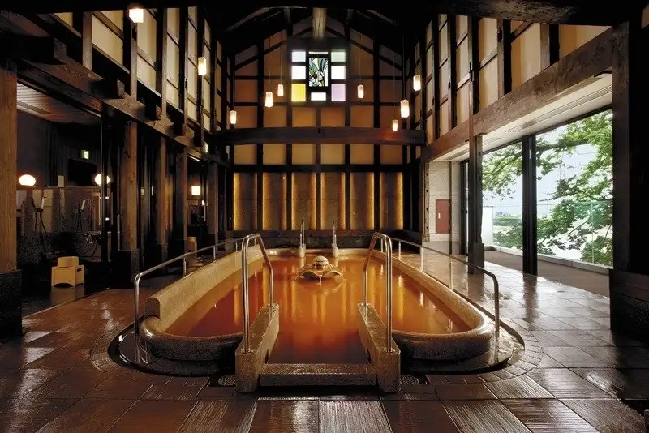
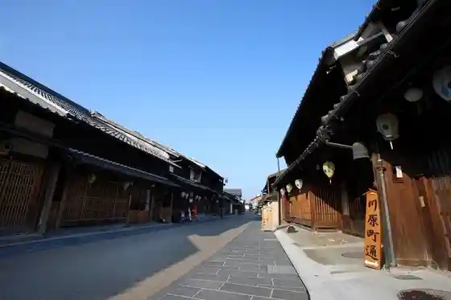
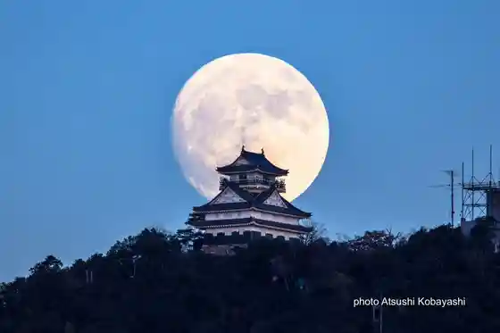

Gifu
Gifu · Gifu
Gifu
Highlighted on the Gifu map.

Sights
Gifu Nagaragawa Onsen
Kawara Town Kaiwai

Gifu Shiro

Kinkasan
Gifu Nagaragawa no Ukai
Gifu History Museum
Gifu Park
Umebayashi Park
Gifu Great Buddha (Shoboji)
Sofuku Tera
Gifu Kinkasan Ropue
Chujo Hime Seigan Sakura
Gifu Park Kinkasan Gifu Shiro no Autumn Leaves
Nawa Konchu Museum
Gifu Park / Nagaragawa Tsutsumi Ukai Sakura
Gifu Shiro Pa no Rama Yakei
Furyu Yakatabune
Tairyu Tera
Matsuo Ike
Gifu Ukai Kanran Fune Zosenjo
Itaya Kawa (Itayagawa) no Hotaru
Iwato Hironori Hiroshi Mine Tera
Jozai Tera
Entoku Tera
Dosan Tsuka
Sagiyama Castle Ruins
Ritsu Matsurigoto Tera
Nagaragawa Teshigoto Town Ie CASA
Roadside Station Yanatsu
Tamamiya
Kurono Castle Ruins
Nobunaga Ko Kyokan Ato
Nippon Izumi Shuzo (Kabu)
Gifu Ken Art Museum
Oda Tsuka
Nohime Ihatsu Tsuka
Nagara Park (Edahiro Yakatato)
Nobunaga Yume Plaza Ogon no Odanobunaga Ko Zo (JR Gifu Eki)
Ina Nami Shrine
Mie Tera
Kin Shrine
Gifu Nobunaga Shrine (Kenkun Shrine)
Gifu Kinkasan Risu Village
Go Tokawa no Tatakai Ato
Genpei no Kosenjo Owari Kawago Senjo
En San Tera
Gokoku Yuki Tera
Hayashi Yo Tera
Kano Tenmangu Shrine
Satoru Sho In
Ryuun Tera
Kichijoji (Kisshoin)
Daikaku Tera
Hora Izumi Tera
Gifu Zenkoji An Jo In
Gifu Seiryu Bunka Plaza
Nagaragawa Kokusaikaigijo
Nagaragawa Ukai Museum
Nagara Kawa Fureai Forest
Gifu Ukiyoe Shunga Art Museum
Gifu no Tayore Ru Mikata !JAF Gifu Shibu